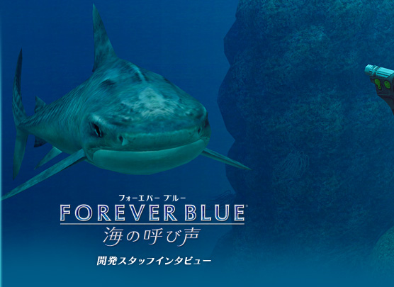
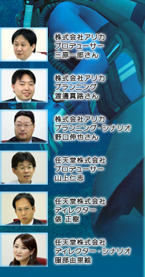
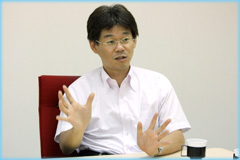
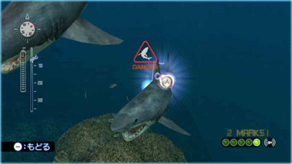
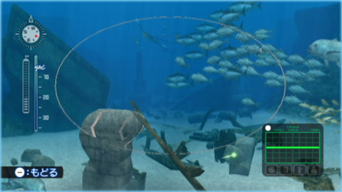

三原
前作が終わったら是が非でも沖縄の美ら海水族館に行きたいと思っていて、会社のみんなで行くことになったんですが、私は忙しくてどうしても予定が合わなくて。渡邊から「美ら海最高！」ってメールが来て、コイツは帰ってきたらどうしてくれようと（笑）。水族館には、そんな自分が行けなくて羨ましかったみたいなことも取り返すつもりで、水槽も増やしたり、たくさんアイデアを盛り込みました。
本編とは別に用意されたサブストーリーも、いつの間にか膨大な数ができていて。（笑）
服部
最終的には深みがしっかりと出ました。全部の要素を遊ぶとなると、だいたい2〜300時間かかりますね。
三原
と言っても、メインのストーリーだけを追っていくなら、これはウチの嫁がモニターですが、普通の主婦で数日もあればクリアできます。
山上
サブストーリーの導入も自然になっていますので、メインのストーリーを進めていて、その途中で地図を完成させたらお金をもらえるよと言われて、じゃあ話の進行も楽になるんじゃないかなと、地図の隅の方も泳いでみようかなとか（笑）。自然に興味がわいたところだけ遊んでいただいた場合でも、20時間くらいで一通り遊んでいただけると思います。
服部
いつでもメインのストーリーには戻れる作りになっていますので、「ちょっと写真を撮りたいです」とか、「水族館に行きたいです」とか、ぜひわき道にもそれて長く遊んでいただきたいですね。
メインのストーリーがはじめていく場所のパック旅行のガイドツアーだとすれば、サブストーリーはオプションのツアーのようなイメージで。
俵
そもそも、最初により多くのお客さまにアピールするために何を入れたらいいのかという話をずっとしていたんですよ。でも、「海のゲーム」に期待するものは皆さんバラバラなので、1つの要素に絞り込むのではなく、「こういうお客さんにはこういうものを贈ろう、別のお客さんにはこれを用意しよう」と、いろんな魅力をたくさん入れることで、皆さんに興味を持ってもらおうと考えたんです。
山上
小さいところで言うと、サメも出るべきだよね、とか。サメがいたら怖いから逃げるし、何か対策を採らなければいけなくなる、そうすればドキドキする。
それから、今回は酸素ボンベの空気が減るので、なくなると前のポイントまで戻されるんです。遺跡は迷路のようになっているんで迷うんですね。でも「ここで戻されてなるものか」って急いで、「ここかな、ここかな？あー、間違えた」ってなって戻されたとき、ゲームらしさを楽しんでもらえると思います。

三原
そうやって進めなくなったところで、寄り道を見つけてもらって、性能のいい酸素ボンベを買い、そんな遊びもできるんだねと知ってもらえたらいいですね。
渡邊
サメと言えば、特殊な電磁波を撃ち込んで生き物を治療する「PULSAR（パルサー）」という装備が生まれました。サメのような危険な生物に向かって撃つと、その生物をリラックスさせて沈静化させるという効果もあります。
山上
そう言えば、打ち合わせでボソッと「サメに襲われたら、襲ってくるサメを撃ちたくない？」って言ったんですよね。
俵
ゲームとしてみれば、サメを撃てたら楽しいのですが、サメ以外も撃ちたくなるだろうし、そうすると害のない魚を撃ってもいいのか？ そんなことするとこのソフトの雰囲気が壊れてしまうのでは、と非常に悩みました。でも、PULSARを応用することで、サメを傷つけることなく、危険を回避することができるようになりました。

渡邊
ちなみに、パルサーで沈静化すると魚があまり動かなくなるんで、写真が撮りやすいんですよ。パルサーのエフェクトは写真には写り込まないようにしていますので、ズームでゆっくり撮りたいときはオススメです。
三原
エサで引き寄せるとどうしてもたくさんの魚が寄って来ちゃうんですが、パルサーなら単独のベストショットが撮れます。すべての魚に効くわけじゃないんですが。
山上
「マルチセンサー」でのサルベージ、アイテム探しなんかのアイデアも、結構開発の終盤だったんでどうしようかなって言っていたんですよね。

服部
サルベージできるアイテムも、最初は学術的でリアルなものが拾えるというコンセプトでいこうと言っていたんですけど、「それじゃ面白くないんで、もっと金目のものを……」みたいな。
三原
あたりさわりのないヤツにしてって言ったのに、野口がわりとすごいものを出してくるんで、私のフィルターでボツになったものもあります（笑）。
野口
鑑定する前の見た目が同じものを何十種類も作らなければいけないというのが大変でしたね。
俵
そこにある自然にできたもの、真珠だったり鍾乳石だったりとかは、拾ってきてはダメなので、人為的にあとから海に沈んだものを考えてください、と依頼していました。
服部
プレイしていただくとわかるんですが、すごい場所でお醤油の瓶とかが見つかったり（笑）。